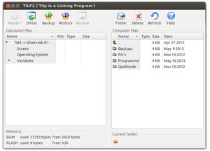

TiLP
Dieser Artikel wurde für die folgenden Ubuntu-Versionen getestet:
Ubuntu 16.04 Xenial Xerus
Ubuntu 14.04 Trusty Tahr
Zum Verständnis dieses Artikels sind folgende Seiten hilfreich:
Taschenrechner von Texas Instruments  werden häufig im Unterricht verwendet. Manche dieser Taschenrechner lassen sich mit dem PC verbinden, um Dateien und Programme zu übertragen.
werden häufig im Unterricht verwendet. Manche dieser Taschenrechner lassen sich mit dem PC verbinden, um Dateien und Programme zu übertragen.
TiLP (TiLP is a Linking Program) ist ein Ersatz für Ti-Connect, das nur unter Windows und Mac OS X verfügbar ist. Es kann Dateien übertragen, den Bildschirm auslesen und das Betriebssystem des Taschenrechners updaten.
Installation¶
TiLP kann über die Paketquellen von Ubuntu bezogen werden. Folgendes Paket muss installiert werden [1]:
tilp2 (universe)
 mit apturl
mit apturl
Paketliste zum Kopieren:
sudo apt-get install tilp2
sudo aptitude install tilp2
Benutzung¶
TiLP startet man mittels des Befehls gksudo tilp[2].
|  |
| Das TiLP-Hauptfenster |
Das Hauptfenster ist in zwei Teile gegliedert: Im linken Teil sieht man die Dateien des Taschenrechners, im rechten die am eigenen PC.
Um den Taschenrechner zu verbinden, ruft man per  -Klick das Kontextmenü des linken Teilfensters auf und wählt dann "Change Device". Alternativ kann man auch
Strg +
D drücken.
-Klick das Kontextmenü des linken Teilfensters auf und wählt dann "Change Device". Alternativ kann man auch
Strg +
D drücken.
Im nun erscheinenden Fenster wählt man den Kabeltyp und den Taschenrechner aus. Falls man sich nicht sicher ist, welchen Kabeltyp oder Taschenrechner man hat, kann man auch auf die Lupe klicken. TiLP sucht dann nach angeschlossenen Kabeln und zeigt die Treffer in der Liste darunter an. Falls man den Taschenrechner per USB verbindet, kann man noch ein Häkchen vor "USB scan at startup" setzen. Dann wird TiLP beim Start automatisch den erstbesten Taschenrechner verbinden.
Um die Datein vom Taschenrechner anzeigen zu lassen drückt man oben im Menu den Button Dirlist.
Dateien übertragen¶
Im rechten Frame navigiert man zur gewünschten Datei und zieht sie per Drag and Drop in den linken. Man sollte dabei darauf achten, dass man die Datei auf dem richtigen Ordner ablegt. Um Datein auf den PC zu übertragen zieht man per Drag and Drop die gewünschte Datei in einen beliebigen Ordner.
Hinweis:
Die übertragenen Dateien legen sich zunächst in den Arbeitsspeicher des Taschenrechners. Wenn man sie dauerhaft behalten oder Platz im RAM schaffen will, muss man sie zunächst Archivieren. Dabei werden die Dateien vom RAM zum ROM verschoben. Wie das funktioniert, steht im Handbuch des Taschenrechners.
Einen Screenshot machen¶
Mit TiLP kann man auch den Bildschirm des Taschenrechners auslesen. Dazu klickt man im linken Frame doppelt auf "Screen". In dem sich öffnenden Fenster klickt man dann auf das Aktualisieren-Symbol  . Den Screenshot kann man dann per Klick auf abspeichern.
. Den Screenshot kann man dann per Klick auf abspeichern.
Die Uhr einstellen¶
Um die Uhr einzustellen, klickt man im linken Frame doppelt auf "Clock". Es erscheint ein Fenster, in dem man die Uhrzeit manuell einstellen kann oder sie mit der PC-Uhrzeit synchronisieren kann.
Links¶
TI File Base
- Eine Sammlung von Programmen für den TI mit sehr großer SpieleauswahlTaschenrechner
 Programmübersicht
Programmübersicht
- Erstellt mit Inyoka
-
 2004 – 2017 ubuntuusers.de • Einige Rechte vorbehalten
2004 – 2017 ubuntuusers.de • Einige Rechte vorbehalten
Lizenz • Kontakt • Datenschutz • Impressum • Serverstatus -
Serverhousing gespendet von